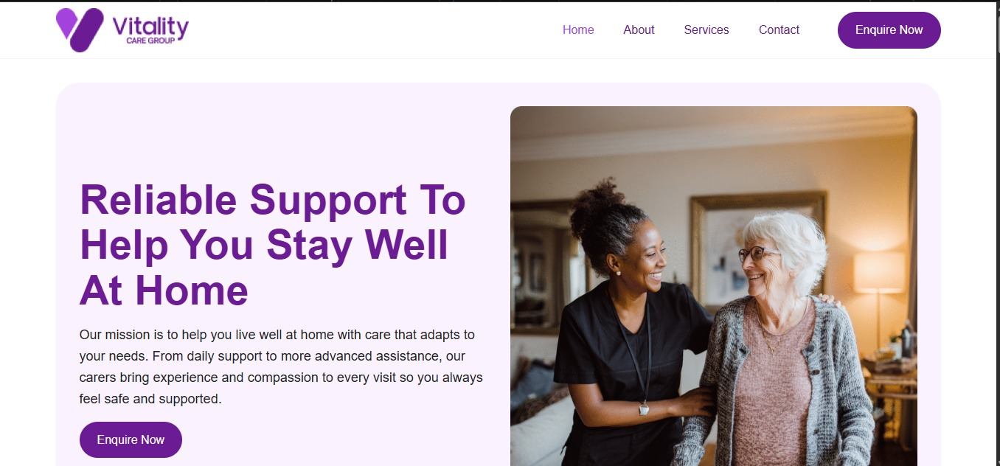
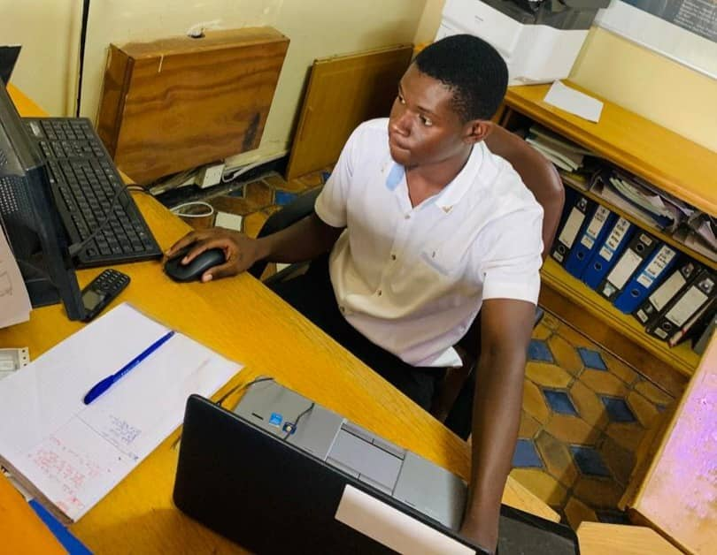
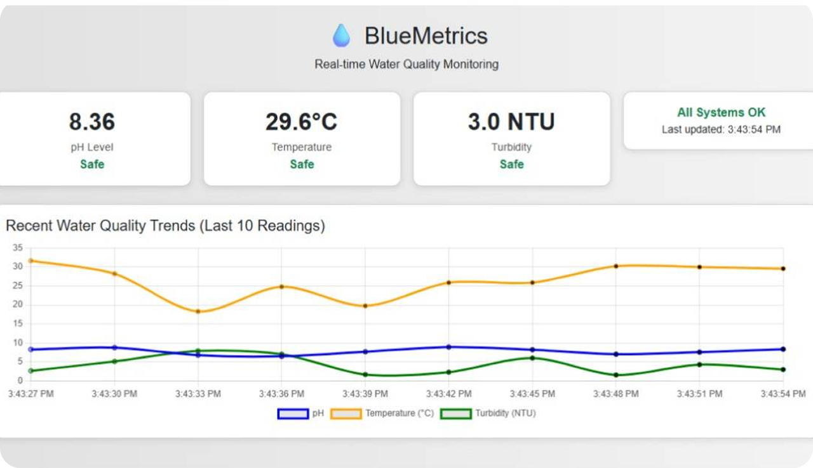
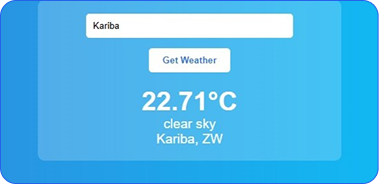
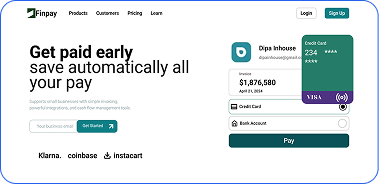

Vitality Group Website
A responsive website developed under mentorship, focused on improving layout, usability, and content clarity using modern front-end practices.
View projectI build clean, responsive websites and help small businesses run their technology smoothly, from design and deployment to ongoing support.

I offer practical web and IT solutions designed to help individuals and small businesses build a strong online presence and run their technology reliably.
I design and build responsive, fast and user-friendly websites using modern front-end technologies.
I create clean interface designs and simple marketing visuals that support your brand and website.
I help individuals and small offices resolve common computer and software issues and keep their systems working reliably.
I assist with small office network setup, device connections and basic network troubleshooting.
I provide ongoing updates, bug fixes and basic performance improvements to keep your website running smoothly.
A smart IoT-enabled system that monitors water quality for aquaculture ponds, built using sensors and a web dashboard to track key parameters.

These projects highlight my ability to design and build practical web solutions across real websites, interactive applications, and UI-focused projects.

A responsive website developed under mentorship, focused on improving layout, usability, and content clarity using modern front-end practices.
View project
A responsive web application that displays real-time weather data, demonstrating JavaScript logic, API integration, and clean interface design.
View project
A financial web application interface designed in Figma, focused on clear layout structure, user flow, and modern UI design principles.
View projectI combine technical development, design, and IT skills to build functional, user-friendly web solutions while supporting systems and processes effectively.
I create responsive websites using HTML, CSS, and JavaScript, focusing on clean code, modern practices, and seamless user experiences.
I design intuitive interfaces using Figma, wireframing, high-fidelity mockups, and basic design systems to ensure consistent and user-friendly design.
I provide first-line IT support, troubleshoot issues, assist with system setup, and maintain clear documentation and process support.
I use Git & GitHub, VS Code, Browser DevTools, and Figma for efficient development, version control, and design handoff.
I’m a Junior Web Developer and Content Writer passionate about building clean, functional websites and creating clear, user-focused content.
I enjoy combining technical skills with design thinking to deliver responsive, practical web solutions, while continuously learning new tools and techniques.
Through school projects, mentorship, and personal practice, I’ve developed a foundation in web development, UI/UX design, and IT support, and I’m eager to apply these skills to real-world challenges.
I’m always open to new opportunities, collaborations, or questions. Feel free to reach out and I’ll get back to you promptly.
Email: ziomepraiser@gmail.com
Phone: +263 78 601 9719